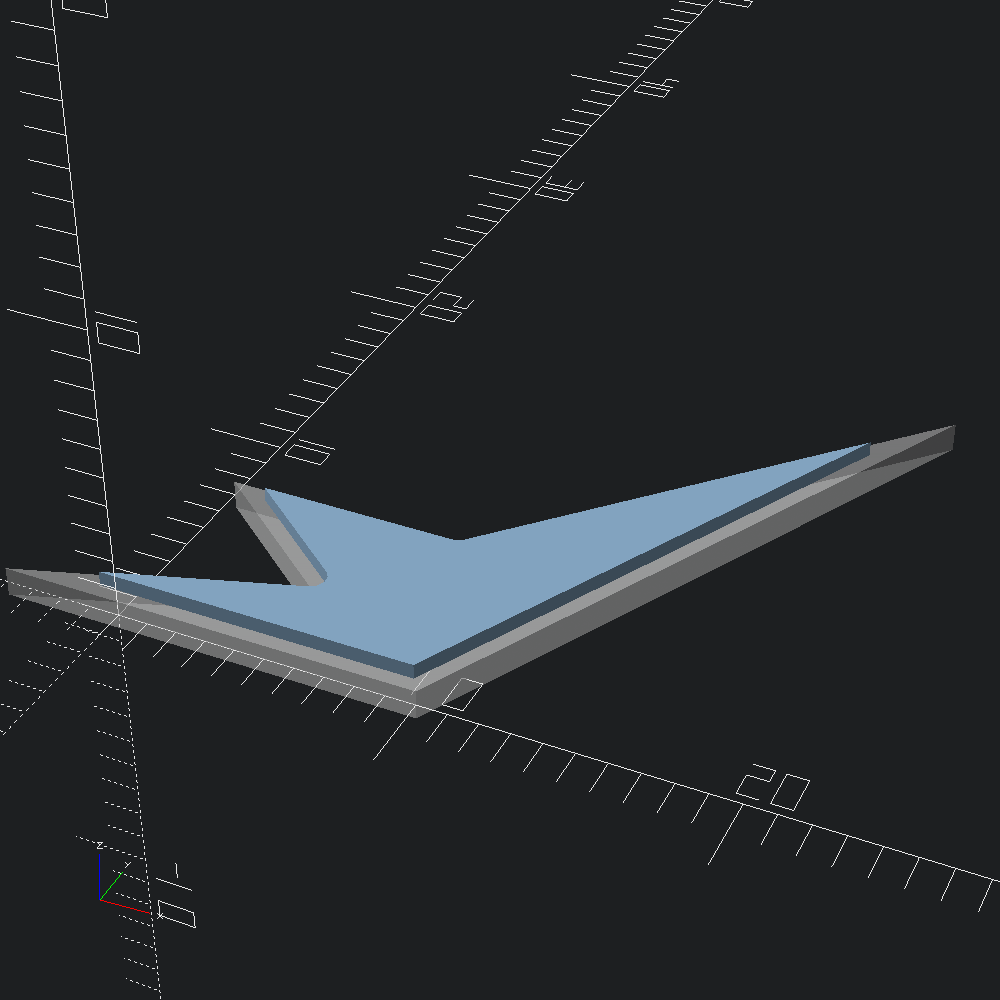

Offsets and roundovers
open OCADml
open OSCADmlDraw a polygon and make a pointy scad from it to compare to our alterations.
let poly = Poly2.make V2.[ v (-4.) 0.; v 5. 3.; v 0. 7.; v 8. 7.; v 20. 20.; v 10. 0. ]
let pointy =
Scad.of_poly2 poly
|> Scad.extrude ~height:1.
|> Scad.translate (v3 0. 0. (-0.5))
|> Scad.color ~alpha:0.5 Color.SilverPoly2.offset, and Path2.offset, are the point representation counterparts of Scad.offset, so they share the same semantics. For this example, we apply an negative (inward) circular offset.
let () =
Poly2.offset ~mode:`Radius (-0.5) poly
|> Scad.of_poly2
|> Scad.extrude ~height:1.
|> Scad.add pointy
|> Scad.to_file "offset_poly.scad"
More fine-grained control over 2d and 3d path roundovers can be found in the Path2.Round and Path3.Round modules respectively. For this example, we'll use the Path2.Round.circles constructor to create our circular roundover specification with different radii assigned to each point of the input path poly.outer.
let shape_spec =
let radii = [ 1.; 1.5; 0.1; 10.; 0.8; 10. ] in
Path2.Round.circles ~kind:`Radius (List.combine poly.outer radii)Then we'll apply our Path2.Round.t shape_spec with Path2.roundover, with fn segments per corner, and compare that to the original pointy shape.
let () =
Scad.polygon (Path2.roundover ~fn:60 shape_spec)
|> Scad.extrude ~height:1.
|> Scad.add pointy
|> Scad.to_file "circular_rounding.scad"

let () =
let sq = Path3.square ~center:true (v2 2. 2.)
and circ = Path3.(ztrans 2. @@ yrot (Float.pi /. 2.) @@ circle ~fn:32 3.) in
Mesh.hull (List.append sq circ)
|> Scad.of_mesh
|> Scad.(add @@ ztrans 2. @@ sphere ~fn:64 1.1)
|> Scad.to_file "test_hull_3d.scad"